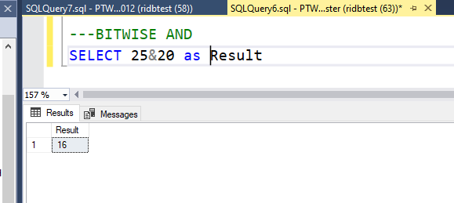
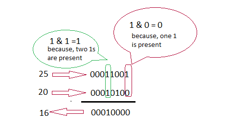
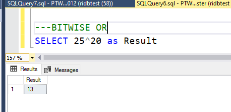
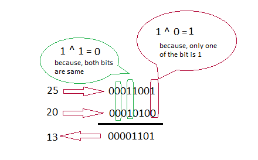
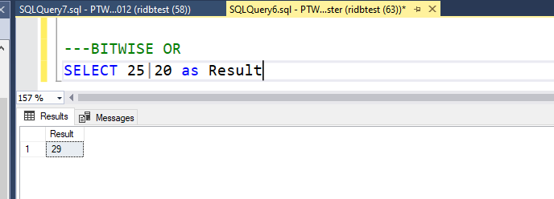

Examples on how we use these Operators
Here are some Screenshots with real time results of how you can use the Operators. If used in correct way , they can help is powerful SQL transformations , data mining , data analysis.
BitwiseAND
BitwiseExclusiveOR
BitwiseOR
We will use two values 25 and 20 for this operation.
SQL BitwiseAND Operator
Bitwise And(&) operator performs logical AND on each bit on two values, which means, both bits from two ends should be 1 to get the 1 else result will be 0. For example, check the following image which contains query and result of '&' operator on 2 values.
Binary value for 25, 20 are 00011001 and 00010100 respectively. Now the calculation will be done as follows. If two bits are 1 then the result will be 1 otherwise 0.
We will use two values 25 and 20 for this operation.
SQL Bitwise Exclusive OR(^) Operator
Bitwise Exclusive OR(^) operator performs bitwise exclusive or on each bit on two values which means, only one of the two bits should be 1 to get 1 as result else we get 0 . For example, check the following image which contains query and result of '^' operator on 2 values.
Binary value for 25, 20 are 00011001 and 00010100 respectively. Now the calculation will be done as follows. When we are applying Bitwise Exclusive OR, result will be 1 when only one of the two bits is 1 else 0 even we have two bits are 1.
We will use two values 25 and 20 for this operation.
SQL BITWISE OR Operator
Here is the results we see when doing BITWISE OR operator
You can probably try to figure out what happened and share it to easyreportss@gmail.com?? ( Fun project)
